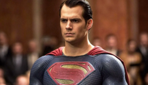

O universo da DC Comics é um dos mais antigos e influentes da cultura dos quadrinhos. Criada nos anos 1930, a DC apresentou ao mundo alguns dos heróis mais icônicos da história, personagens que representam valores como justiça, esperança, coragem e responsabilidade.
Entre eles está o Superman, o símbolo máximo da esperança. Vindo do planeta Krypton, ele usa seus poderes para proteger a humanidade e mostrar que a verdadeira força está em fazer o bem. Superman é o retrato do ideal de herói: justo, compassivo e sempre disposto a ajudar, mesmo sem pedir nada em troca.
Outro destaque é o Batman, o Cavaleiro das Trevas. Diferente de muitos heróis, ele não possui poderes sobrenaturais — sua maior arma é a inteligência. Após presenciar a morte de seus pais, Bruce Wayne dedicou sua vida a combater o crime em Gotham City, usando tecnologia, estratégia e disciplina. Ele simboliza a ideia de que qualquer pessoa pode lutar contra a injustiça se tiver determinação e coragem.
A Mulher-Maravilha, princesa das Amazonas, representa a força e a sabedoria feminina. Com seu laço da verdade e sua coragem inabalável, ela defende a paz e a igualdade entre os povos. Sua presença inspira não apenas por seus poderes, mas por sua compaixão e senso de justiça.
Outros heróis da DC também se destacam por suas histórias e valores. O Flash, com sua velocidade incrível, simboliza otimismo e esperança, sempre tentando consertar os erros do passado e proteger o futuro. O Aquaman, rei de Atlântida, luta para equilibrar os mundos da terra e do mar, mostrando que o heroísmo também está em proteger o planeta. Já o Lanterna Verde usa o poder de sua vontade para criar qualquer coisa com sua mente, representando a força dos sonhos e da imaginação.
Juntos, esses heróis formam a Liga da Justiça, um grupo que defende o mundo contra ameaças poderosas e inspira as pessoas a nunca desistirem. A DC Comics nos mostra que, apesar das diferenças, todos os heróis compartilham um mesmo ideal: lutar pelo bem e acreditar que a humanidade pode ser melhor.
Os heróis da DC não são apenas personagens de histórias em quadrinhos; eles são símbolos de esperança e inspiração. Suas jornadas refletem o que há de melhor em nós — a capacidade de superar o medo, enfrentar a escuridão e continuar acreditando na luz.
O Batman é um dos heróis mais sombrios e complexos da DC Comics. Após presenciar o assassinato de seus pais ainda criança, Bruce Wayne jurou combater o crime em Gotham City. Sem superpoderes, ele usa sua inteligência, treinamento físico e uma impressionante coleção de equipamentos tecnológicos para enfrentar criminosos e proteger os inocentes. Conhecido como o Cavaleiro das Trevas, Batman representa a ideia de que o verdadeiro poder vem da mente e da vontade de nunca desistir. Ele é movido pela dor, mas transforma seu sofrimento em força e justiça, mostrando que até nas trevas pode existir luz.

O Superman é o símbolo máximo da esperança e do heroísmo. Nascido no planeta Krypton, foi enviado à Terra ainda bebê e criado por uma família humana. Com poderes incríveis — como força sobre-humana, voo e visão de calor —, ele usa suas habilidades para proteger a humanidade. Clark Kent vive entre os humanos como um repórter, escondendo sua verdadeira identidade. Ele representa o equilíbrio entre poder e bondade, provando que ser forte não significa dominar, mas sim proteger. O Superman é o exemplo de que a verdadeira grandeza vem do coração, e não da força física.
Na série The Flash, Barry Allen é um jovem cientista forense que ganha supervelocidade após um acidente com o acelerador de partículas. Com seu novo poder, ele se torna o homem mais rápido do mundo e dedica sua vida a salvar pessoas e combater o crime em Central City. Barry é um herói otimista, gentil e determinado, que nunca desiste de fazer o certo — mesmo quando enfrenta perdas e desafios pessoais. A série mostra que, além da velocidade, o verdadeiro poder do Flash está em seu coração e em sua capacidade de nunca parar de acreditar no bem.
A Mulher-Maravilha é uma guerreira amazona e princesa da ilha de Themyscira. Criada por Zeus e treinada desde cedo para ser uma guerreira, Diana é símbolo de paz, coragem e igualdade. Com seu laço da verdade, braceletes indestrutíveis e força sobre-humana, ela luta para proteger a humanidade dos males do mundo. Mais do que uma heroína poderosa, a Mulher-Maravilha é uma defensora da justiça e da compaixão. Ela mostra que o verdadeiro poder está em lutar pelo amor e pela verdade, não pela dominação.

O Aquaman é o rei de Atlântida, um reino submerso no fundo dos oceanos. Metade humano e metade atlante, Arthur Curry vive entre dois mundos: o da superfície e o das profundezas. Dotado de força sobre-humana, resistência extrema e a habilidade de se comunicar com as criaturas marinhas, ele luta para proteger o mar e manter a paz entre os povos. O Aquaman representa o respeito pela natureza e a responsabilidade de cuidar do planeta. Seu heroísmo mostra que ser rei não é mandar, mas servir e proteger.
O Arqueiro Verde é um bilionário que, após ficar preso em uma ilha deserta por cinco anos, aprende a lutar, caçar e sobreviver. Quando retorna à sua cidade, Star City, ele decide usar suas habilidades para combater a corrupção e proteger os inocentes. Usando arco e flechas como principal arma, Oliver Queen se torna o vigilante Green Arrow. Determinado e inteligente, ele mostra que o heroísmo vem das escolhas que fazemos todos os dias. Sua história fala sobre redenção, justiça e responsabilidade.

O Ciborgue, também conhecido como Victor Stone, era um jovem atleta promissor até sofrer um grave acidente. Para salvar sua vida, seu pai — um cientista — o reconstruiu com tecnologia avançada, transformando-o em meio homem, meio máquina. Apesar das dificuldades em aceitar sua nova forma, Victor aprende que sua humanidade é o que realmente o torna especial. Com seus poderes tecnológicos e sua mente brilhante, ele se torna membro essencial da Liga da Justiça. O Ciborgue simboliza a superação e a aceitação de si mesmo, mostrando que a verdadeira força vem de dentro.